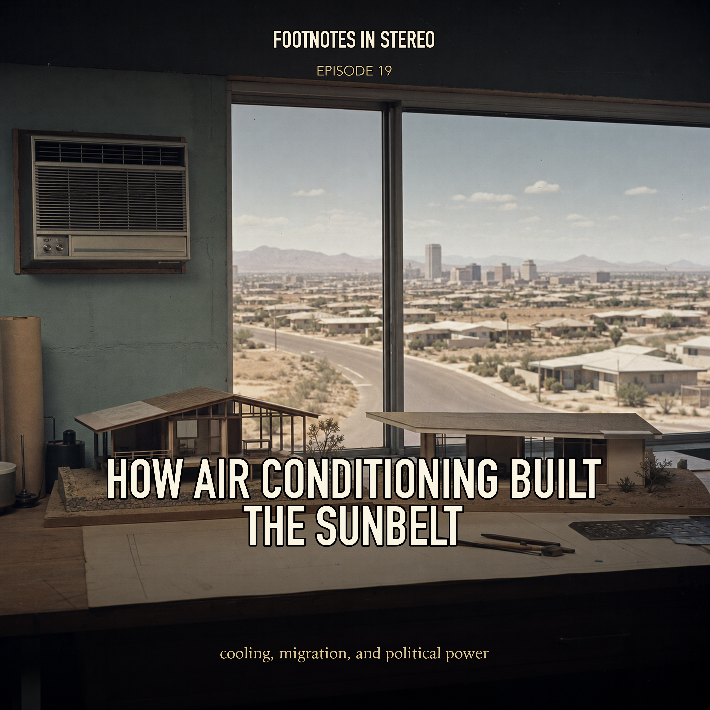

Episode 19 · Patreon bonus
How Air Conditioning Built the Sunbelt
Air conditioning began as a humidity solution for industrial printing, then transformed theaters, offices, homes, architecture, migration, energy use, and electoral power. This episode follows mechanical cooling from Willis Carrier's early systems to the mass-produced window unit and the postwar growth of the Sun Belt, while keeping the environmental bill in view. Created with Gemini Notebook. The conversation and voices in this episode were generated with Gemini Notebook. Fake voices, real facts.
Sources
Transcript
Machine transcript; lightly formatted and subject to correction.
The full episode is available on Patreon. Its audio and transcript are not published in this public archive.